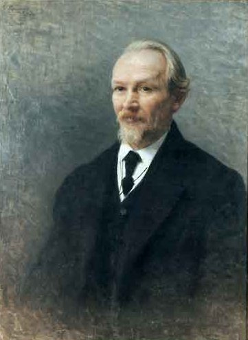
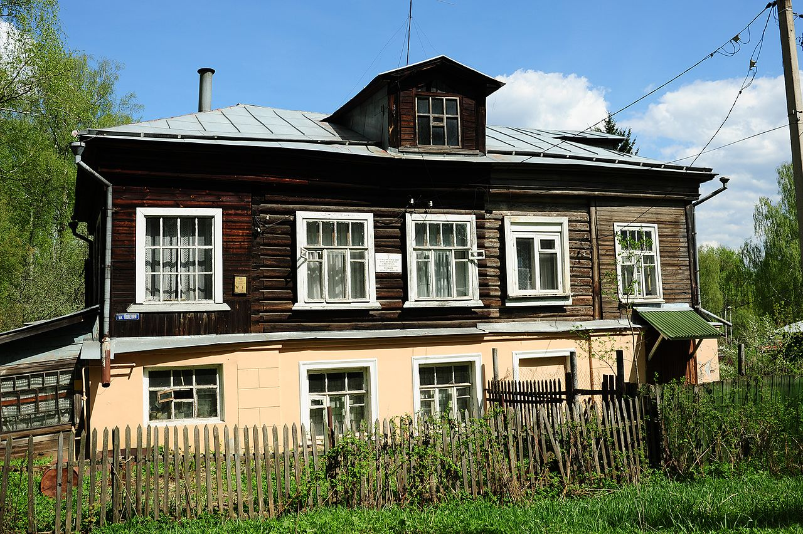

Содержание
Биография
Василий Розанов родился в городе Ветлуге Костромской губернии в многодетной семье чиновника лесного ведомства Василия Фёдоровича Розанова (1822—1861). Рано потерял родителей, воспитывался старшим братом Николаем (1847—1894). В 1870 году переехал с братьями в Симбирск, где его брат преподавал в гимназии. Сам Розанов позже вспоминал: Нет сомнения, что я совершенно погиб бы, не «подбери» меня старший брат Николай, к этому времени закончивший Казанский университет. Он дал мне все средства образования и, словом, был отцом. В Симбирске был постоянным читателем в публичной библиотеке Н. М. Карамзина. В 1872 году переехал в Нижний Новгород, где окончил (1878 г.) гимназию. После гимназии поступил на историко-филологический факультет Московского университета, где слушал лекции С. М. Соловьёва, В. О. Ключевского, Ф. Е. Корша и др. На четвёртом курсе был удостоен стипендии имени А. С. Хомякова. Тогда же, в 1880 году, 24-летний Василий Розанов женился на 41-летней А. П. Сусловой, которая до замужества (в 1861—1866 гг.) была любовницей женатого Достоевского.
После университета
Окончив университет в 1882 году, отказался держать экзамен на степень магистра, решив заниматься свободным творчеством. В 1882—1893 годах преподавал в гимназиях Брянска, Симбирска, Ельца, Белого, Вязьмы. Его первая книга «О понимании. Опыт исследования природы, границ и внутреннего строения науки как цельного знания» (1886) представляла собой один из вариантов гегельянского обоснования науки, но успеха не имела. В том же году Суслова покинула Розанова, отказавшись (и отказывалась всю его жизнь) пойти на официальный развод.
Большую известность получил литературно-философский этюд Розанова «Легенда о великом инквизиторе Ф. М. Достоевского» (1891), положивший начало последующему истолкованию Ф. М. Достоевского как религиозного мыслителя у Н. А. Бердяева, С. Н. Булгакова и других мыслителей; позднее Розанов сблизился с ними как участник религиозно-философских собраний (1901—1903). В 1900 году Мережковским, Минским, Гиппиус и Розановым основывается Религиозно-философское Общество. С конца 1890-х годов Розанов стал известным журналистом позднеславянофильского толка, работал в журналах «Русский вестник» и «Русское обозрение», публиковался в газете «Новое время».
Второй брак
В 1891 году Розанов тайно обвенчался с Варварой Дмитриевной Бутягиной, вдовой учителя Елецкой гимназии.
Будучи преподавателем Елецкой гимназии, Розанов с другом Первовым делают первый в России перевод с греческого «Метафизики» Аристотеля.
Несогласие философа с постановкой школьного образования в России выражено в статьях «Сумерки просвещения» (1893) и «Афоризмы и наблюдения» (1894). В сочувственных тонах описывал брожение в период русской революции 1905—1907 годов в книге «Когда начальство ушло» (1910). Сборники «Религия и культура» (1899) и «Природа и история» (1900) были попытками Розанова найти решение социальных и мировоззренческих проблем в церковной религиозности. Однако его отношение к православной церкви («Около церковных стен», т. 1—2, 1906) оставалось противоречивым. Вопросам отношения церкви к проблематике семьи и сексуальным отношениям посвящена книга «Семейный вопрос в России» (т. 1—2, 1903). В сочинениях «Тёмный лик. Метафизика христианства» (1911) и «Люди лунного света» (1911) Розанов окончательно расходится с христианством по вопросам пола (противопоставляя при этом Ветхий Завет, как утверждение жизни плоти, — Новому Завету).

Разрыв с Религиозно-философским обществом
Статьи Розанова, посвящённые делу Бейлиса (1911) привели к конфликту с Религиозно-философским обществом, в котором состоял философ. Общество, признавшее процесс Бейлиса «оскорблением всего русского народа», призвало Розанова выйти из своего состава, что он вскоре и сделал.
Поздние книги — «Уединённое» (1912), «Смертное» (1913) и «Опавшие листья» (ч. 1—2, 1913—1915) — представляют собой собрание разрозненных эссеистических набросков, беглых умозрений, дневниковых записей, внутренних диалогов, объединённых по настроению. Существует мнение, что в это время философ переживал глубокий духовный кризис, не находивший разрешения в безоговорочном принятии христианских догматов, к которому Розанов тщетно стремится; следуя этому воззрению, итогом мысли Розанова можно считать пессимизм и «экзистенциальный» субъективный идеализм в духе С. Кьеркегора (отличающийся, однако, культом индивидуальности, выражающей себя в стихии пола). Подверженный этому пессимизму, в набросках «Апокалипсис нашего времени» (выпуски 1—10, с ноября 1917 года по октябрь 1918 года) Розанов с отчаянием и безнадёжностью принимает неизбежность революционной катастрофы, полагая её трагическим завершением российской истории.
Воззрения и труды Розанова вызывали критику как со стороны революционных марксистов, так и либерального лагеря русской интеллигенции.
Переезд в Сергиев Посад

Летом 1917 года Розановы переехали из Петрограда в Сергиев Посад и поселились в трёх комнатах дома преподавателя Вифанской духовной семинарии (это жильё им подобрал философ о. Павел Флоренский). Перед кончиной Розанов открыто нищенствовал, голодал, в конце 1918 года обратился со страниц своего «Апокалипсиса» с трагической просьбой: К читателю, если он друг. — В этот страшный, потрясающий год, от многих лиц, и знакомых, и вовсе неизвестных мне, я получил, по какой-то догадке сердца, помощь и денежную, и съестными продуктами. И не могу скрыть, что без таковой помощи я не мог бы, не сумел бы перебыть этот год. <…> За помощь — великая благодарность; и слёзы не раз увлажняли глаза и душу. «Кто-то помнит, кто-то думает, кто-то догадался». <…> Устал. Не могу. 2—3 горсти муки, 2—3 горсти крупы, пять круто испечённых яиц может часто спасти день мой. <…> Сохрани, читатель, своего писателя, и что-то завершающее мне брезжится в последних днях моей жизни. В. Р. Сергиев Посад, Московск. губ., Красюковка, Полевая ул., дом свящ. Беляева. В. В. Розанов умер 5 февраля 1919 года и был похоронен с северной стороны храма Гефсиманского Черниговского скита в Сергиевом Посаде.
Семья
У В. В. Розанова и В. Д. Бутягиной родилось четыре дочери и один сын. Дочь — Верещагина-Розанова Надежда Васильевна (1900—1956), художница, иллюстратор.
Личность и творчество Розанова
Творчество и взгляды Розанова вызывают очень противоречивые оценки. Это объясняется его нарочитым тяготением к крайностям, и характерною амбивалентностью его мышления. «На предмет надо иметь именно 1000 точек зрения. Это „координаты действительности“, и действительность только через 1000 и улавливается». Такая «теория познания» действительно демонстрировала необычайные возможности специфически его, розановского, видения мира. Примером данного подхода может служить то, что революционные события 1905—1907 Розанов считал не только возможным, но и необходимым освещать с различных позиций — выступая в «Новом времени» под своей фамилией как монархист и черносотенец, он под псевдонимом В. Варварин выражал в других изданиях леволиберальную, народническую, а порой и социал-демократическую точку зрения.
«Духовной» родиной для Розанова был Симбирск. Свою отроческую жизнь здесь он описал ярко, с большой памятью о событиях и тончайших движениях души. Биография Розанова стоит на трех основах. Это его три родины: «физическая» (Кострома), «духовная» (Симбирск) и, позднее, «нравственная» (Елец). В литературу Розанов вошёл уже сформировавшейся личностью. Его более чем тридцатилетний путь в литературе (1886—1918) был беспрерывным и постепенным разворачиванием таланта и выявлением гения. Розанов менял темы, менял даже проблематику, но личность творца оставалась неущербной.
Условия его жизни (а они были не легче, чем у его знаменитого волжского земляка Максима Горького), нигилистическое воспитание и страстное юношеское желание общественного служения готовили Розанову путь деятеля демократической направленности. Он мог бы стать одним из выразителей социального протеста. Однако юношеский «переворот» изменил его биографию коренным образом, и Розанов обрел своё историческое лицо в других духовных областях. Розанов становится комментатором. За исключением немногих книг («Уединенное», «Опавшие листья», «Апокалипсис нашего времени») необъятное наследие Розанова, как правило, написано по поводу каких-либо явлений, событий.
Исследователи отмечают эгоцентризм Розанова. Первые издания книг «опавших листьев» Розанова — «Уединенное», а затем и «Опавшие листья», — вошедшие вскоре в золотой фонд русской литературы, были восприняты с недоумением и растерянностью. Ни одной положительной рецензии в печати, кроме бешеного отпора человеку, который на страницах напечатанной книги заявил: «Я ещё не такой подлец, чтобы думать о морали».
Розанов — один из русских писателей, счастливо познавших любовь читателей, неколебимую их преданность. Это видно из отзывов особенно чутких читателей «Уединенного», правда, высказанных интимно, в письмах. Примером может служить емкий отзыв М. О. Гершензона: «Удивительный Василий Васильевич, три часа назад я получил Вашу книгу, и вот уже прочел её. Такой другой нет на свете — чтобы так без оболочки трепетало сердце пред глазами, и слог такой же, не облекающий, а как бы не существующий, так что в нём, как в чистой воде, все видно. Это самая нужная Ваша книга, потому что, насколько Вы единственный, Вы целиком сказались в ней, и ещё потому, что она ключ ко всем Вашим писаниям и жизни. Бездна и беззаконность — вот что в ней; даже непостижимо, как это Вы сумели так совсем не надеть на себя системы, схемы, имели античное мужество остаться голо-душевным, каким мать родила, — и как у Вас хватило смелости в 20-м веке, где все ходят одетые в систему, в последовательность, в доказательность, рассказать вслух и публично свою наготу. Конечно, в сущности все голы, но частью не знают этого сами и уж во всяком случае наружу прикрывают себя. Да без этого и жить нельзя было бы; если бы все захотели жить, как они есть, житья не стало бы. Но Вы не как все, Вы действительно имеете право быть совсем самим собою; я и до этой книги знал это, и потому никогда не мерял Вас аршином морали или последовательности, и потому „прощая“, если можно сказать тут это слово, Вам Ваши дурные для меня писания просто не вменял: стихия, а закон стихий — беззаконие».
Список значимых произведений
- «О понимании. Опыт исследования природы, границ и внутреннего строения науки, как цельного знания» (М., 1886) — план познания мира
- «Цель человеческой жизни» («Вопросы философии», 1892, кн. 14 и 15) — критика утилитаризма.
- Легенда о Великом инквизиторе Ф. М. Достоевского, с присоединением двух этюдов о Гоголе» (СПб., 1893)
- Красота в природе и её смысл» (М., 1894) — изложение эстетические воззрений, книга написана по поводу взглядов Вл. С. Соловьева.
- «Религия и культура», сборник статей, (СПб., 1899) — философия истории, в связи с запросами и требованиями его современности.
- «Место христианства в истории» («Русский Вестник», 1890, 1 и отд.)
- Статьи о браке (1898) — выступил противником догматики.
- «Сумерки просвещения» (СПб., 1899) — книга статей педагогического содержания.
- «Литературные очерки» — сборник статей (СПб., 1899)
- «В мире неясного и не решенного» (СПб., 1901)
- «Природа и история. Сборник статей» (СПб., 1900)
- «Семейный вопрос в России» (СПб., 1903)
Философия
Философия Розанова является частью общего русского литературно-философского круга, однако особенности его существования в этом контексте выделяют его фигуру и позволяют говорить о нём как о нетипичном его представителе. Находясь в центре развития российской общественной мысли начала 20 в., Розанов вел активный диалог со многими философами, писателями, поэтами, критиками. Многие из его работ были идейной, содержательной реакцией на отдельные суждения, мысли, работы Бердяева, В. С. Соловьёва, Блока, Мережковского и др. и содержали развернутую критику этих мнений с позиций его собственного мировоззрения. Проблемы, занимавшие мысли Розанова, связаны с морально-этическими, религиозно-идейными оппозициями — метафизика и христианство, эротика и метафизика, православие и нигилизм, этический нигилизм и апология семьи. В каждой из них Розанов искал пути к снятию противоречий, к такой схеме их взаимодействий, при которой отдельные части оппозиции становятся разными проявлениями одних и тех же проблем в существовании человека.
Интересна одна из интерпретаций философии Розанова, а именно как философии «маленького религиозного человека». Предметом его исследования становятся перипетии «маленького религиозного человека» наедине с религией, такое множество материала, указывающего на серьёзность вопросов веры, на их сложность. Грандиозностью задач, которые ставит перед Розановым религиозная жизнь его эпохи лишь отчасти связана с Церковью. Церковь не поддается критической оценке. Человек остается наедине с самим собой, минуя институты и установления, которые объединяют людей, дают им общие задачи. Когда так ставится вопрос, то проблема рождается сама собой, без дополнительного участия мыслителя. Религия по определению — объединение, собирание вместе и т. д. Однако понятие «индивидуальная религия» приводит к противоречию. Впрочем, если его истолковать таким образом, что в рамках своей индивидуальности религиозный человек ищет свой способ связи и объединения с другими, тогда всё встает на нужные места, всё приобретает смысл и потенциал для исследования. Именно его использует В. Розанов.
Журналистика
Исследователи отмечают необычный жанр сочинений Розанова, ускользающий от строгого определения, однако прочно вошедший в его журналистскую деятельность, предполагавший постоянную, как можно более непосредственную и вместе с тем выразительную реакцию на злобу дня, и сориентированный на настольную книгу Розанова «Дневник писателя» Достоевского. В опубликованных сочинениях «Уединенное» (1912), «Смертное» (1913), «Опавшие листья» (короб 1 — 1913; короб 2 — 1915) и предполагавшихся сборниках В «Сахарне», «После Сахарны», «Мимолетное» и «Последние листья» автор пытается воспроизвести процесс «понимания» во всей его интригующей и многосложной мелочности и живой мимике устной речи — процесс, слитый с обыденной жизнью и способствующий мыслительному самоопределению. Этот жанр оказался наиболее адекватным мысли Розанова, всегда стремившейся стать переживанием; и последнее его произведение, попытка осмыслить и тем самым как-то очеловечить революционное крушение истории России и его вселенский резонанс, обрела испытанную жанровую форму. Его «Апокалипсис нашего времени» публиковался невероятным по тому времени двухтысячным тиражом в большевистской России с ноября 1917 по октябрь 1918 (десять выпусков).
Религия в творчестве Розанова
Розанов так писал о себе: «Я принадлежу к той породе „излагателя вечно себя“, которая в критике — как рыба на земле и даже на сковороде». И признавался: «Что бы я ни делал, что бы ни говорил и ни писал, прямо или в особенности косвенно, я говорил и думал, собственно, только о Боге: так что Он занял всего меня, без какого-либо остатка, в то же время как-то оставив мысль свободною и энергичною в отношении других тем». Таким образом, Розанов говорил о себе, — не забывая Бога.
Розанов считал, что вся остальная религия стала индивидуальной, личным же стало христианство. Делом каждого человека стало выбирать, то есть осуществлять свободу, но не веры в смысле качества и конфессии — этот вопрос решен 2000 лет назад, но в значении качества укорененности человека в общей вере. Розанов убежден, что этот процесс воцерковления не может проходить механически, через пассивное приятие таинства святого крещения. Должна быть активная вера, должны быть дела веры, и здесь рождается убежденность, что человек не обязан мириться с тем, что он не понимает чего-то в реальном процессе жизнедеятельности, что все касающееся его жизни приобретает качество религиозности. По Розанову отношение к Богу и к Церкви определяется совестью. Совесть различает в человеке субъективное и объективное, индивидуальное и личное, существенное, главное и второстепенное. Он пишет: «Нужно различать в споре о совести две стороны: 1) отношение её к Богу; 2) отношение её к Церкви. Бог по учению христианскому есть Личный бесконечный дух. Каждый с первого же взгляда поймет, что отношение к Лицу несколько иное, чем к порядку вещей, к системе вещей. Никто решительно не скажет, что и Церковь лична: напротив, лицо в ней, напр. всякого иерарха, глубоко покоряется некоторому завещанному и общему порядку».
Тема пола
Центральной философской темой в творчестве зрелого Розанова стала его метафизика пола. В 1898 в одном из писем он формулирует своё понимание пола: «Пол в человеке — не орган и не функция, не мясо и не физиология — но зиждительное лицо… Для разума он не определим и не постижим: но он Есть и все сущее — из Него и от Него». Непостижимость пола никоим образом не означает его ирреальности. Напротив, пол, по Розанову, есть самое реальное в этом мире и остается неразрешимой загадкой в той же мере, в какой недоступен для разума смысл самого бытия. «Все инстинктивно чувствуют, что загадка бытия есть собственно загадка рождающегося бытия, то есть что это загадка рождающегося пола». В розановской метафизике человек, единый в своей душевной и телесной жизни, связан с Логосом, но связь эта имеет место не в свете универсального разума, а в самой интимной, «ночной» сфере человеческого бытия: в сфере половой любви.
Еврейская тема в творчестве Розанова
Еврейская тема в творчестве Василия Розанова занимала важное место. Это было связано с основами мироощущения Розанова — мистическим пансексуализмом, религиозным поклонением животворящей силе пола, утверждением святости брака и деторождения. Отрицая христианский аскетизм, монашество и безбрачие, Розанов находил религиозное освящение пола, семьи, зачатия и рождения в Ветхом завете. Но его антихристианский бунт смирялся его органическим консерватизмом, искренней любовью к русскому «бытовому исповедничеству», к семейным добродетелям православного духовенства, к освящённым традицией формам русской государственности. Отсюда проистекали и элементы откровенного антисемитизма Розанова, столь смущавшего и возмущавшего многих современников.
По оценкам Электронной еврейской энциклопедии высказывания Розанова иногда носили откровенно антисемитский характер. Так, в сочинении Розанова «Иудейская тайнопись» (1913) присутствует следующий фрагмент: «Да вы всмотритесь в походку: идёт еврей по улице, сутуловат, стар, грязен. Лапсердак, пейсы; ни на кого в мире не похож! Всем не хочется подать ему руку. „Чесноком пахнет“, да и не одним чесноком. Жид вообще „скверно пахнет“. Какое-то всемирное „неприличное место“… Идёт какою-то не прямою, не открытою походкою… Трус, робок… Христианин смотрит вслед, и у него вырывается: — Фу, гадость, и зачем я не могу обойтись без тебя? Всемирное: „зачем не могу обойтись“…» Однако при оценке взглядов Розанова следует учитывать и его нарочитое тяготение к крайностям, и характерную амбивалентность его мышления[8]. Ему удалось прослыть одновременно юдофилом и юдофобом[8]. Розанов сам отрицает антисемитизм в своём творчестве. В письме М. О. Гершензону[16] он пишет: «Анти-семитизмом, я, батюшка, не страдаю… Что касается евреев, то, … я как-то и почему-то „жида в пейсах“ и физиологически (почти половым образом) и художественно люблю, и, втайне, в обществе всегда за ними подглядываю и любуюсь.» Во время дела Бейлиса Розанов опубликовал многочисленные статьи «Андрюша Ющинский» (1913), «Испуг и волнение евреев» (1913), «Открытое письмо С. К. Эфрону» (1913) «Об одном приёме защиты еврейства» (1913) «Недоконченность суда около дела Ющинского» (1913), пр. По оценке Электронной еврейской энциклопедии[15] Розанов в них пытается доказать справедливость обвинения евреев в ритуальном убийстве, мотивируя его тем, что в основе еврейского культа лежит пролитие крови. Соединение восторженных гимнов библейскому иудаизму с яростной проповедью антисемитизма навлекло на Розанова обвинения в двурушничестве и беспринципности. За свои статьи о деле Бейлиса Розанов был исключён из Религиозно-философского общества (1913)[15]. Только к концу жизни Розанов стал высказываться о евреях без открытой враждебности, местами, даже восторженно. В своей последней книге «Апокалипсис нашего времени» Розанов, высказывая своё отношение к евреям, писал: Одна идея «Домостроя», Домо-строя, есть уже великая, священная. … Несомненно, самый великий «Домострой» дан Моисеем в «Исходе», во «Второзаконии» и т. д. и продолжен в Талмуде, и затем фактически выражен и переведён в жизнь в кагале. … И евреи, впавшие в такое ужасное одиночество после Христа, с враждебностью всего мира против них, зажили «кагалом». «Единственное спасение для нас». … «Книга судей израилевых», с Руфью, с Иовом, свободная, нестеснённая, мне казалась всегда высшим типом человеческого проживания. Она неизмеримо выше и счастливее царств. … Итак, «бедный человек» возлюбил своё «гетто», в нём греется, им защищается, и, ей-ей, это выше Сократа и Спинозы. Потому что это священнее Сократа и Спинозы. Тут Бог ютится. В гнёздышке. Потому что гнёздышко — оно такое священно, которого ищет и сам Бог. Не спорю: есть Бог Универзуса. Но мне как-то более нравится «Бог гнёздышка». И вот я думаю — евреи во всём правы. Они правы против Европы, цивилизации и цивилизаций. Европейская цивилизация слишком раздвинулась по периферии, исполнилась пустотами внутри, стала воистину «опустошённою» и от этого погибает. … Живите, евреи. Я благословляю вас во всём, как было время отступничества (пора Бейлиса несчастная), когда проклинал во всём. На самом же деле в вас, конечно, «цимес» всемирной истории: то есть есть такое «зёрнышко» мира, которое — «мы сохранили одни». Им живите. И я верю, «о них благословятся все народы». — Я нисколько не верю во вражду евреев ко всем народам. В темноте, в ночи, незнаем — я часто наблюдал удивительную, рачительную любовь евреев к русскому человеку и к русской земле. Да будет благословен еврей. Да будет благословен и русский.